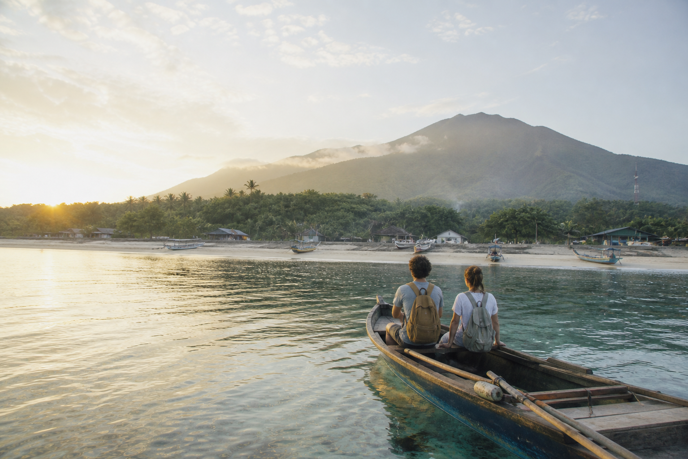

Stay close to the arrival point.
Short transfers, clear check-in details, and a first-day route that leaves room for delay.
See gentle itineraries →
Indonesia, at a slower pace
Availability, arrival route, pace, and cancellation context appear before you commit. Save a plan while you compare.
Short transfers, clear check-in details, and a first-day route that leaves room for delay.
See gentle itineraries →Homes and small stays with workspace, kitchen, and a practical rhythm beyond the weekend.
Explore longer stays →See where timing, weather, and boat schedules matter before you choose a non-refundable option.
Compare flexible routes →